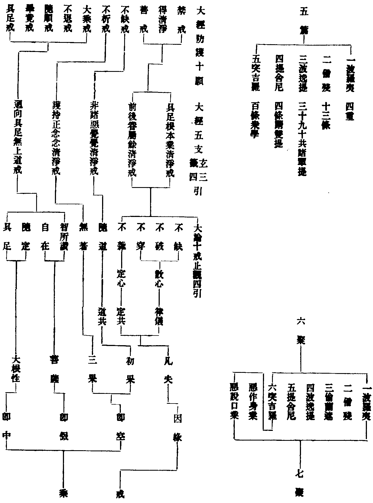

讀教記卷第十七
止觀(三)
戒體
業疏(三下)(三)若唯立作但在一念非通一形何能防也(云云)若但無作不能自生要由作發以作防非則短無作起無所從二法緣具作願方遂所言作者身口方便造趣營為名之為作如陶家輪動轉之初(云云)言無作者身動滅已與餘識俱是法隨生故名無作業疏(三下)(四)二陳體狀體謂業體正是戒法所依本也(云云)經論所談善惡業者名也今述作無作者業之體也。
業疏(三下)(九)夫戒體者何耶所謂納聖法於心胷即法是所納之戒體然後依體起用防遏緣非今論此法三宗分別。
濟緣記(三下)(十四)納是能受心聖法即所受戒能所相冥心法和合而成於業攬法為業為道基本故名戒體戒充正報心為總主故云心胷初受則心為能納法為所納受已則法為能依心是所依問即法是體法體何分答若望未受但名為法體是無情若加期誓要緣領納依心成業此法有功乃名為體是故言法未必是體言體其必是法。
夫戒體者南山意謂以志誠心受聖戒法感聖戒法納入心中即是戒體既是志誠善心感聖戒法通名稱之即聖法善業為戒體也如定實法宗云業即戒體定假名宗云業由心起故勝前計定圓宗云成善種子驗知戒體即聖法善業也。
業疏(三下)(九)如薩婆多二戒同色者彼宗明法各有繫用戒體所起依身口成隨具辨業通判為色業即戒體(云云)如律明業天眼所見善色惡色(云云)以斯文證正明業體是色法也(云云)然此色體與中陰同微細難知唯天眼見見有相貌善惡歷然。
此實法宗作無作戒並色為體南山意謂實法宗計同色為體者有二焉初依身口起故屬色文云戒體所起依身口成是也二天眼能見故屬色文云如律明業天眼所見是也是知起依身口故體非心天眼見之明知是色矣或問律家有宗明色三種一可見有對色二不可見有對色三不可見無對色於今作無作色何分對耶曰十二入中色塵是可見有對色法塵是不可見無對色餘五根五塵是不可見有對色今作無作戒體之色身作戒色即可見有對口作戒色即不可見有對身口二無作戒色即不可見無對色在法入中所收也故疏引心伽二論云身作可見有對色口作不可見有對色身口無作俱不可見無對色也然疑無作戒色既屬法塵即對意根云何無對須知五根五塵相對俱色今雖對意而意非色故云無對也又問作戒以色為體還只取身口動作之色耶若然何故濟緣記云準知作戒必取發業不唯身口動作而已(文)若取所發之業自是無作耳曰只取身口動作之色是作戒體所發之業自是無作色若濟緣意者葢明作戒須能發無作之業乃名作戒若不能發徒然運用二戒俱無也彼宗非不明心但心為遠助之緣非正業體故云由心善惡方便動現也由心使身口成業耳。
業疏(三下)(九)二依成實當宗四分作無作位體別者由此宗中分通大乘業由心起故勝前計分心成色色是依報心是正因故明作戒色心為體是則兼緣顯正相從明體由作初起必假色心無作後發異於前緣故強目之非色心耳考其業體本由心生還熏本心有能有用心道冥昧止可名通故約色心窮出體性各以五義求之不得不知何目強號非二。
此假名宗作戒以色心為體無作以非色非心為體南山意謂空宗分通大乘業由心起故勝前計但由作戒色心正助不相捨離故相從明體具於色心也其次非色非心不出二意一所發翻作故雙非以能發作戒是於色心而所發無作但是色心之業體異色心故也二心業冥昧故雙非以約分通大乘而說無作業體本由心生而心法冥昧故約色心窮之不得試欲以此業法為色色須形相方所等業非此等之色試欲以此業法為心心須慮知明暗等業非此之心既而冥昧難名故強名非色非心爾竹庵斷曰推業本通大乘考體對作戒附小宗立名也或問空宗依成論玅玄(四)(六)成論云色是無教法不至無色界(文)無作無教無表但是異名豈非空宗以色為無作耶曰此由雜編之誤濟緣記通云此乃成論諸師牒難有宗之語謂若以色為無教則應不至無色界無教既至彼天則顯非色明矣(文)言牒難者謂牒計作難也。
業疏(三下)(十)後約圓教明戒體者戒是警意之緣也(云云)欲了妄情須知妄業故作法受還熏妄心於本藏識成善種子此戒體也(云云)今識前緣終歸大乘故須域心於處也故經云十方佛土唯有一乘除佛方便假名字說既知此意當護如命如浮囊也。
此圓宗不分作無作並以藏識善種為體葢約法華開權顯實涅槃扶律談常以立圓宗竊詳南山之意特以大乘引接小教皆入佛乘也或問此與菩薩戒體同異云何曰既約開顯則業體是同其持犯有異也又問只一戒體空有兩宗所計各異何耶曰濟緣云此由佛世機悟有殊致使滅後分宗各計(文)今以南山正義出之良由有宗所悟業依身口故屬於色空宗所悟業由色心故無作翻作屬非色非心也。
禪門(二)(二)第二明戒體之相者若薩婆多人解無作是無表色不可見無對若曇無德人明無作戒是第三聚非色非心法諸部既異雖不可偏執約小乘教門終是無作為戒體其義不差。
止觀(四)(二)因此性戒得有無作受得之戒小乘明義無作戒即是第三聚大乘中法皷經但明色心無第三聚心無盡故戒亦無盡若就律儀戒論無作可解(云云)。
輔行(四上)(四)問今明衍門何須小檢而明十種得戒人耶答如涅槃中處處扶律今此亦爾小為方便故知出家菩薩六和十利與聲聞同六度四弘異於小行若在家菩薩三歸五戒咸趣菩提況復梵網八萬威儀七眾並資五道通被豈容破戒稱為佛乘故以乘戒四句對簡(云云)無作一發無捨失緣終訖一形相續恒起如初受時作白已後入餘心者尚名得戒故成論云若人入不善心無記心無心亦名持戒(云云)小乘下約大小乘以辨三聚明無作不同小乘經論共立三聚謂色心非色非心言心無盡等者意明心性以為戒體若小乘戒體是第三聚者且依經部若有部中還用色為無作戒體然大乘中雖以心性而為戒體若發無作亦依身口作戒而發雖依身口體必在心若先小後大一切轉為無盡戒體若先受大後方出家欲在大比丘數而不失菩薩法者則更受律儀但於一切發得身口清淨防非律儀無作戒體不復發也故涅槃中五篇七聚並是出家菩薩律儀又若先小後大則開小夏以成大夏若先受大後受律儀在小則依小在大則依大理雖若是方土不同此土僧徒不簡大小西方不爾一向永隔然四依出世必大小並弘但隨物機緣通局在彼。
輔行(九上)(十九)戒是有為色法定是有為心法命朽之時形俱無作戒體雖謝無作戒業得得不滅以隨業道至未來故。
玅玄(十)(五)小乘中云法身尚其不滅如均提沙彌憂惱佛問汝和尚戒身滅否答言不。
釋籤(十)(九)彼小乘言不滅者以無作之業至未來世名為不滅非常住不滅。
今家所用小乘戒體兩宗所明皆出聖師不可偏取通則只以無作為戒體別則依有是色依空雙非不可執諍如禪門文也。
籤(四)(廿六)心非色故戒亦非色故心無盡戒亦無盡故使一切皆摩訶衍。
戒疏(上)(十三)大乘情期極果憑師一受遠至菩提(云云)方便求受其體則興若捨菩提願若增上煩惱犯十重其體則廢若無此二緣至佛乃廢。
咸教主曰夫言體者當論二種一者當體二者所依今明所發無作體者乃是宗中所明因行從因克果有修有發附事而明故須具於當體而辨未涉所依也當知戒體通色通心葢由稟戒從三業受精持無犯虔重恪誠方乃發起無作戒體此體發時必有能發必有所發心為能發色為所發以由戒法稟受之時心不散亂身則翹勤口則答對並由精勤方乃納戒在心方有無作體發故知若無虔勤之念不能納戒在心若從納義戒為能納心為所納若從發義心為能發戒為所發所發之戒即是一種聖法善業此善業者即無表色天眼能見與小乘戒業體無別但由大乘圓實教中詮量此體與小乘異乃通二向從能發屬心從所發屬色止觀輔行以心為體從能發而言戒疏論文以色為體從所發而說故知非心則無以發非色則無以彰是故諸文或從心說或從色說有茲所以文方不虗此色此心皆屬當體皆屬於事有興有廢在教在權並由三師稟受作為精持制止而得此戒即修治造作之玅行也五章言之乃屬宗攝輔行判之並是明宗深有所以如此判已戒之當體義有定準然後方可論其所依所依者即理性也故此事行大乘詮之並由理具方有事用若無理體而為所依行未免邪事皆成妄是故圓事乃即理之事所修之行乃全性起修行從性起方云諸行無作事與理即方云體內之權行是妙行權是妙權此大乘戒乃全理之事全性之修方為妙戒是故特云不起而已起即性無作假色者性之一字全提理性之所依起字色字乃語發戒之當體當體有二起字是能發之心色字是所發之色由依於性而發此戒故云起即性無作假色也北峰曰從悟理約本實說諸法唯心從迷情約教權說故起業是色雜編云夫言體者有當體有所依當體屬色所依屬心其熈鈔頂山不能備引。
問今性無作假色與律圓宗戒體同異耶曰律據藏識含藏一切善惡因果染淨種子故以藏識善種子為體今明性具諸法故以性色為體是則善種與性色本同濟緣問云假色與下細色何別(約有宗心論假色并天台假色以問空宗分通大乘細色也)答若彼心論名體俱別若對戒疏名別體同由心所造善惡業種微細難知故名細色問四分既明善色惡色天眼所見那得談體却云非色答彼明細色義通大乘此談非色正符宗意(文)。

別教修中
止觀(六)(卅二)初心尚未入十信至迴向若無迴向豈得修中無修則無證此中道觀於凡夫人望崖無益。
輔行(六下)(十八)言修中者亦寄次第實而言之三觀圓修以二觀心修於中道是故至此即名圓修故四念處云別向圓修即此意也。
妙宗(上)(廿七)方便立已圓觀可修於十向中即以所顯中道佛性而為能觀中道之觀諦觀不二惑智一如三觀圓修是無作行。
妙玄(三)(十一)十迴向始正修中此中但理不具諸法。
輔行(三上)(十六)十迴向中一一迴向各各有十所緣境界第十向中第十觀者名為無相第一義觀得入初地。
北峰師曰原此教中諸大菩薩積劫練行多門赴機豈至迴向猶觀但理今謂不出二義一者但中順權教也二者圓中據實行也有以教證二道說圓修者誤矣或問十向所修無作與圓無作同異云何曰妙玄云或從教道十向無作斷苦集有道滅圓教即苦集是道滅故二無作即斷不同四教義云非圓教之無作即此義也若爾十向無作應斷苦集耶曰從教則斷從行則不斷也。
所觀陰境
凡夫境界有根塵識識謂五識五意識第六識塵謂可見可對色不可見可對色不可見不可對色根謂六根浮塵外根勝義內根經論浩博故此錄示。
大品云為過一切色相滅有對色相不念種種相入無邊空處過一切色滅可見有對色滅有對色滅不可見有對色不念種種色相滅不可見無對色一切色法唯十一種謂五根塵法入少分少分者無表色也。
大論二十一四十一云三種色者一可見有對二不可見有對三不可見無對。
阿毗曇云一可見謂色是二有對有十謂五根塵若云不可見有對應但云五根四塵三不可見無對謂法入少分。
大經二十一云眼見色壞名為過色五根塵壞名過有對於二種餘及無教壞名過異相此之三色並在色界欲入無色故滅此三(已上四文並輔行六上四紙引)。
阿毗曇明三種色一者可見有對色即色塵一法為眼所見假極微所成名為有對二者不可見有對色謂眼等五根此勝義根也聲等四塵此之九法非眼所見皆假極微所成三者不可見無對色即無表色唯識宗明第八識變三種色一唯麤非細即山河大地等二亦麤亦細內身浮塵色對山河等色即細比內身中五根即麤三唯細非麤即內五根此即大乘勝義五根以能造八法不可見有對淨色而為體性地瑜伽論及五蘊論明三種色謂顯色形色表色開顯色為十三謂青黃赤白光影明暗煙雲塵霧空一顯色開形為十謂長短方圓麤細高下若正不正開表為八謂取捨屈伸行住坐臥俱舍出無表色者謂無所表彰也涅槃出無作色者謂無所作為也薩婆多出無教色者謂無所教示也(翻譯名義第三卷三十八顯色篇引)夫言根者義有二種一者浮塵外根二勝義內根言浮塵者四大是能造四微是所造色香味觸四微和合乃得成根故楞嚴云我今觀此浮根四塵只在我面資中師云浮虗不實昏翳真性故曰浮塵此浮塵外根也言勝義者即清淨四大洪敏師鈔云此勝義根雖用能造所造八法為體是不可見有對色能照境發識乃聖人所知之境其義深遠非同塵境麤淺故名清淨此是染中說淨非無漏妙明之淨此勝義內根也(翻譯名義第六卷陰界入法篇第五十八引)佛地論(聲字函第六卷)大圓鏡智(八識)平等性智(七識)妙觀察智(六識)成所作智(五識)現量境(定心離分別)比量境(散心分別)。
毗婆沙論(道泰譯分字函第七卷)云何智法云何識法(云云)識即智智即識惟長一字何者闍那秦言智毗闍那秦言識長一字者所謂毗也為斷如是意欲說差別義故先說智次說識復有說者此俱是根本法故增長法中識為根本寂滅法中智為根本復有說者俱是元首法故如說道品法中誰為元首所謂智也生死法中誰為元首所謂識也。
瑜伽師地論(彌勒造玄奘譯聽字函第十五卷)現量者三種一非不現見二非已思應思三非錯亂境界(釋文不錄)問如是現量誰所有耶答略說四種所有一色根現量二意受現量三世間現量四清淨現量色根現量者謂五色根所行境界如先所說現量體相意受現量者謂諸意根所行境界如先所說現量體相世間現量者謂即二種總說為一世間現量清淨現量者謂諸所有世間現量亦得名為清淨現量或有清淨現量非世間現量謂出世智於所行境有知為有無知為無有上知有上無上知無上如是等類名不共世間清淨現量比量者謂與思擇俱已思應思所有境界此復五種一相比量二體比量三業比量四法比量五因果比量相比量者謂隨所有相狀或由現在或先所見推度境界如見幢故比知有車由見煙故比知有火如是以王比國以夫比妻以角比牛(云云)體比量者謂現見彼自體性故比類彼物不現見體或現見彼一分自體比類餘分如以現在比過去(云云)業比量者謂已作用比業所依如遠見物無有動搖鳥居其上由是等事比知是杭若有動搖等事比知是人若聞嘶聲比知是馬(云云)法比量者謂以相隣相屬之法比餘相隣相屬之法如屬無常比知有苦(云云)因果比量者謂以因果展轉相比如見有行比至餘方見至餘方比先有行若見有人食不平等如是等類當知總名因果比量是名比量。
瑜伽師地論(福字函第六十三卷)一阿賴耶識二轉識阿賴耶是所依轉識是能依此復七種所謂眼識乃至意識譬如水浪依止暴流或如影像依止明鏡復次諸識皆名心意識若就最勝阿賴耶識名心何以故由此識能聚集一切法種子故於一切時緣執受境緣不可知一類器末那名意於一切時執我我所及我慢等思量為性餘識名識謂於境界了別為相如是三種有心位中心意意識於一切時俱有而轉若眼識等轉識不起彼若起時應知彼增俱有而轉如是或時四識俱轉乃至或時八識俱轉又一意識於一切間分別一境或二或多自境他境故說意識不可思議復次阿賴耶識無有煩惱而共相應末那恒與四種任運煩惱相應於一切時俱起不絕謂我我所行薩迦耶見我慢我愛不共無明是諸煩惱與善不善無記識俱而不相違其性唯是隱沒無記任運而起當知諸餘分別所起隨眾緣力差別而轉(云云)。
達磨雜集論(安慧菩薩糅唐玄奘譯第二卷)云何建立識蘊謂心意識差別心者謂蘊界處習氣所熏一切種子阿賴耶識亦名異熟識亦名阿陀那識以能種集諸習氣故(云云)意者謂一切時緣阿賴識思度為性與四煩惱相應謂我見我愛我慢無明(云云)識者謂六識身眼識乃至意識了別為性。
攝大乘論釋(世親菩薩造三藏玄奘譯孝字函第一卷)三種自性一依他起自性二徧計所執自性三圓成實自性論曰由攝藏諸法一切種子識故名阿賴耶勝者我開示又曰阿陀那識甚微細一切種子如暴流我於凡愚不開演恐彼分別執為我。
此識亦名阿陀那識何以故由此識於身隨逐執持故亦名阿賴耶識何以故由此識於身攝受藏隱同安危義故亦名為心何以故由此識色聲香味觸等積集滋長故。
佛性論(天親造陳真諦譯竭字函第三卷)心者即六識心意者阿陁那識識者阿梨耶識。
大乘唯識論(天親造陳三藏真諦譯力子函)實無有外塵似塵識生故猶如翳眼人見毛二月等。
大乘中立義外塵實無所有若爾云何見有外塵為證此義故言似塵識生故由識似塵現故眾生於無塵中見塵為顯此識故名斯譬如眼有病及眼根亂於無物中識似二月。
楞伽經唯識論(天竺三藏魏國照玄沙門統菩提流支譯忠字函)心意與識及了別等如是四法義一名異此依相應心說非依不相應心說心有二種一者相應心所謂一切煩惱結使受想行識與心相應以是故言心意與識及了別等義一名異不相應心者所謂第一義諦常住不變自性清淨心。
成唯識論(護法菩提造唐三藏玄奘譯則字函)識所變相雖無量種而能變識類別為三一謂異熟即第八識多異熟性故二謂思量即第七識恒審思量故三謂了境即前六識了境相麤故。
攝論釋(嚴字函第一卷)眼根緣外色塵眼識得生與眼識同一時共境有分別意識起若一眼識生是時一分別意識生與眼識共境此眼識若共二識或三四五共起是時有一分別意識與五識共緣境生。
南嶽止觀(下)(十)問曰似識妄分別時為是意識能總分別六塵為六識各各自分別一塵答五識見塵時各與意識俱時而起如眼識見似色時即有一意識俱時分別妄執也餘識亦如是是故意識總能分別妄執六塵五識但能得五塵不生分別妄執問曰妄執五塵為實者為是五意識為是第六意識答曰大乘不明五意識與第六別但能分別者悉名意識。
輔行(七下)(廿九)唯識云言唯識者唯是一識復分二種一者分別二無分別分別識者名為識識無分別者名似塵識一切世間皆為似塵識之所成三無性等色心之法本來不二彼既分於二識例亦分於二色問色之與識如何同異答若色心相對則有色有心論其體性則離色無心離心無色若色心相即二則俱二一則俱一故圓說者亦應得云唯色唯聲唯香唯味唯觸何但獨得云唯識耶若合論者無不皆悉具足法界復次若從末說一切眾生二種不同上界多著識下界多著色若約識為唯識攬外向內令觀內識皆是一識識既空已十界皆空識若假者十界皆假識若中者十界皆中專於內心觀一切法觀外十界即見內心是故當知若識若色皆是唯色若識若色皆是唯識雖說色心但有二名論其法體秪是法性。
輔行(五上)(廿四)又有宗五識及五意識并第六識俱能引起受等三心若依乘論五識定無起三心義雖此同異今初且觀諸識為境問識陰是王有宗心王與數同起如何別於心王修觀答此但宗計意則不然直爾觀心義當觀王。
止觀(五)(九)然界內外一切陰入皆由心起佛告比丘一法攝一切法所謂心是論云一切世間中但有名與色若欲如實觀但當觀名色心是惑本其義如是若欲觀察須伐其根如灸病得穴今當去丈就尺去尺就寸置色等四陰但觀識陰觀陰者心是也。
輔行(五上)(廿五)然界內下欲示識心而為觀境先且總攬心為起由即前所引經論是也佛告下重引阿含大論以證心造若欲下雙舉二譬世出世陰如條如病一念識心如根如穴如華他治病湯不過一種兩種灸不過一穴兩穴若爾觀心即足何故第四破徧文末更例觀於餘陰界入答欲融諸法示觀境徧是故下文例餘界入若示境體觀心即足以心徧故攝餘法故又非但心攝一切亦乃一切攝心故四念處云非但唯識亦乃唯聲唯香味等今當下從廣之狹正示境體陰入界三並可為境寬漫難示故促指的略二就陰如去丈就尺略四從識如去尺就寸以由界入所攝寬多陰唯有為有為之中義兼心色故置色存心心名復含心及心所今且觀心王置於心所故初觀識餘下例之問五識五意識及第六識並能生於受等三心何等識心及所生三心是今觀境答五識五意識定是今境未屬煩惱在無記故於第六中取能招報者仍須發得乃屬煩惱境餘之分別方屬今境此五識及五意識雖在今境仍在下文歷緣對境中明。
十義書(二)且如止觀去於丈尺唯取於寸乃是於事造中去其所造取能造以為所觀之境故云伐樹得根灸病得穴乃是去其千枝百脈唯取一根一穴立所觀境故云先重明境故扶宗云以一念識心為境也。
止觀(六)(卅七)歷餘一心三觀者若總無明心未必是宜更歷餘心或欲心瞋心慢心此等心起即空即假即中還如總中所說(云云)前來所說但觀識陰作如此說餘四陰亦如是十二入十八界亦如是是名觀陰界入境破法徧竟。
輔行(六下)(廿四)次歷餘一心者以向橫豎不二一心歷於諸心一切諸心無非無明是故初且總觀無明總既非宜開總出別無明心中具諸心故問前文但云觀於識陰何故得有欲等心耶答一者諸心不出於識二者為對便宜之人故須兼列問貪等即是煩惱所攝何名觀陰答雖是煩惱善惡陰攝況此但觀欲等心王若爾與煩惱境有何別耶答此是煩惱非煩惱境彼由觀發昔此過現習生與下不同故合在此其實煩惱非報陰也雖即屬陰攝陰不盡是故下文復例餘陰所言歷者謂巡檢也以別望總故名為餘不出無明故云一心次前來下例餘陰入等者問應在第七卷末明十乘竟例餘陰入皆修十乘何故於此即例餘耶答以義便故從初至此單約識心從此已去乃至離愛具約五陰方成法相故通塞中既檢校諦緣諦緣必須具足五陰道品念處不可獨明一識陰故正助秖是助於道品下三秖是明於觀陰次位等耳故須於此例餘陰入將餘陰入共為觀境問歷餘一心與四陰何別答有同有異具如向簡又歷餘一心以心對心而論總別若例餘陰以陰對陰而論麤細報非報異法相別故故須別明雖復別明應知同異陰不出心心不離陰陰從能覆心從能造造親覆疎並心為境。
止觀(八)(一)第二觀煩惱境者上陰界入不悟則非其宜而觀察不已擊動煩惱貪瞋發作是時應捨陰入觀於煩惱前訶五欲知其過罪棄葢是捨平常陰入觀於果報於中求解今觀發作隆盛起重貪瞋。
輔行(八上)(一)前觀陰入觀於報陰報陰無記於彼陰上求於妙解故彼陰境未名煩惱又前別歷一心文中雖觀貪瞋非今境意但是現起善惡諸惑皆陰入攝是以因陰所起煩惱皆名陰境今境必須因觀陰發發重貪等方名今境從今觀去正舉今境異陰葢等故云起重貪瞋。
文句(五)(十七)逼身者五識也心者意識心王也身為八苦所逼而心不厭惱也。
記(六)(十三)五識等者逼近也濁在五識名之為近以切已故名為逼身同時意識俱受苦境非初剎那未分別時又秖此五識體是異熟八苦故也近豈過此故此同時安能厭患故此心王心所不能以此意識成觀唯能分別以成三受三受義成故云切己逼甚故切故一一苦皆由五識以對於境次至第六而重分別復立苦因何能生厭。
輔行(五下)(十七)俱舍云由即六識身無間滅為意身者體也無間滅時為意根體爾時五識亦依無間滅意以為親緣用五色根以為疎緣而生五識五識無間分別生時即名意識。
止觀(四)(廿二)前訶五欲乃是五根對現在五塵發五識今棄五蓋即是五識轉入意地追緣過去逆慮未來五塵等法為心內大障。
輔行(四下)(十四)前所訶欲對塵發識非直五識得五欲名必須同時意識緣現五塵起五意識分別想著起希須心故名為欲今此五蓋方云轉入意地者謂前五塵至入禪時意地猶染能覆禪定故名為葢前欲一向對順情塵蓋通違順對定以說。
輔行(五上)(廿四)若依經部大乘法相等同時意識緣現五塵及落謝塵法入所收少分屬色少分屬心今且觀心心即識也。
色心五陰十二入十八界揀境從寬至狹指五陰之識即色心之心故云識陰者心是也四明謂總無明心荊溪謂尅示境體境既定矣故受之以用觀即提起心之一字曰一觀心是不思議境而不曰一觀識是不思議境者葢有旨焉浮塵外根不能對塵如盲聵[邕*鼻]強痺是也能對塵者勝義根也未發識故故名內根五識者根塵相對所發之識也五意識同時意識雖二名不同皆發識之後分別希須之識也色心平等皆是法界而言唯識者識外無色識法界故若分別之言唯識者一有分別識此指心也二無分別識此指色也只一識外既別無色故知若識若色皆是唯識例言唯色者色外無識色法界故若分別之言唯色者一無分別色此指色也二有分別色此指心也只一色外既別無識故知若識若色皆是唯色荊溪云雖說色心但有二名論其法體秖是法性然心是法界能造諸法而色是法界能造諸法夫誰曰不然。
讀教記卷第十七